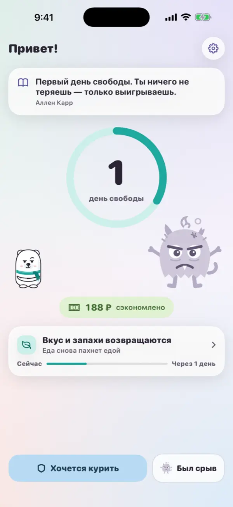
Каждый день без сигарет на счету
Счётчик в кольце, деньги, которые остаются у тебя, и ближайшее улучшение в организме — на одном экране.
Норд — белый медведь из Арктики, где самый чистый воздух. Он рядом каждый день, пока никотиновый монстр слабеет и исчезает. По идеям книги Аллена Карра «Лёгкий способ бросить курить».
iPhone, iOS 17 и новее. Бесплатно.
Всё, что нужно, чтобы бросить, — бесплатно и без регистрации.
Сколько дней свободы и сколько денег осталось у тебя, а не ушло в дым.
В первые дни он огромный и требует дозу. Без неё он сдувается и к 12 неделям исчезает.
Без дыхательных упражнений: правда о никотине, «вспомни» и «одной не бывает».
Что восстанавливается и когда — по данным ВОЗ и исследований, с источниками.
Честно отметить и увидеть, сколько пользы уже получено. Эти дни у тебя не отнять.
Счётчик дней на экране телефона и уведомление, когда в организме что-то восстановилось.
Главное в приложении — листайте вниз.

Счётчик в кольце, деньги, которые остаются у тебя, и ближайшее улучшение в организме — на одном экране.
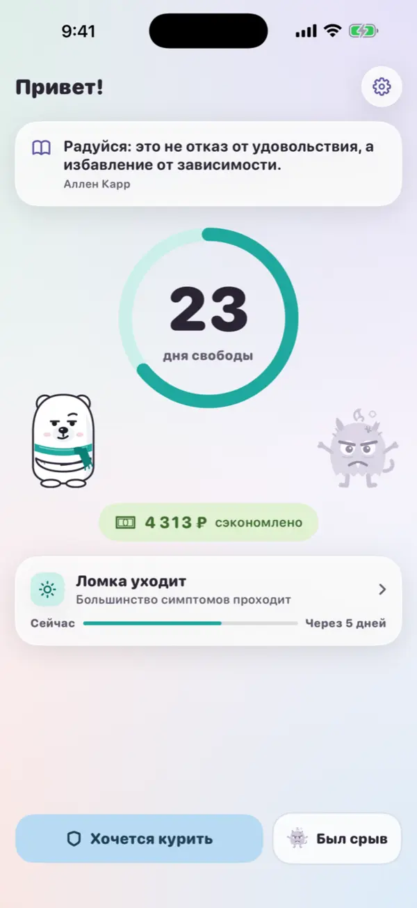
В первые дни никотиновый монстр огромный и требует дозу. Без неё он сдувается и к 12 неделям исчезает, а Норд растёт.
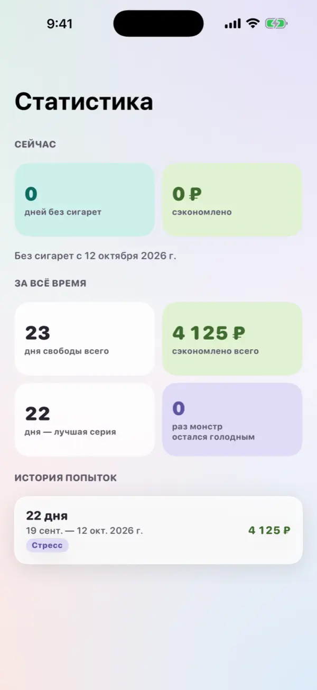
Вся история попыток, лучшая серия и сумма за всё время. Видно, сколько уже получено.
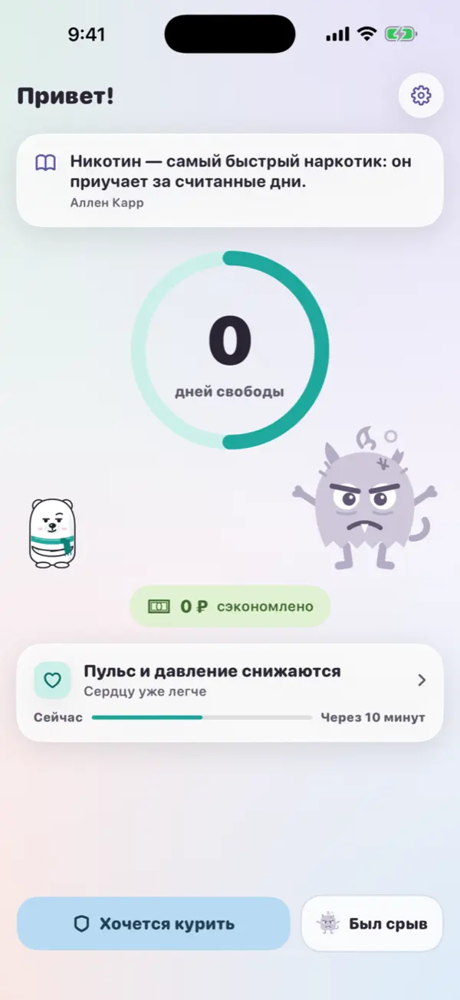
Отметить честно, без стыда. Счёт начнётся заново, но история и деньги никуда не денутся.
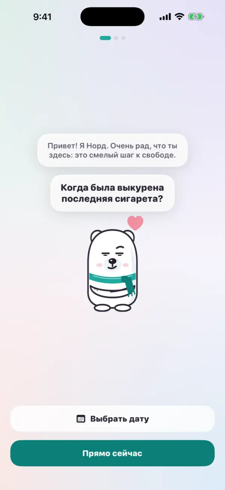
Белый медведь из Арктики встречает и спрашивает, когда была выкурена последняя сигарета.
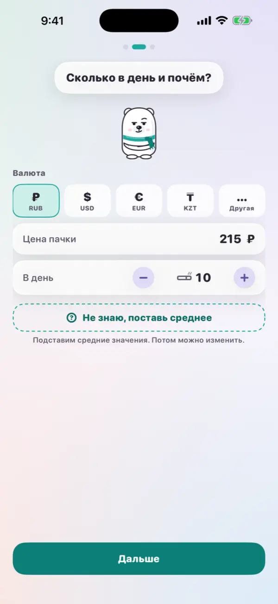
Валюта, цена пачки и сколько сигарет в день. Не знаешь — Норд подставит средние значения.
Четыре палитры, светлая и тёмная тема. Шарф Норда, кольцо и кнопки меняют цвет вместе с палитрой.
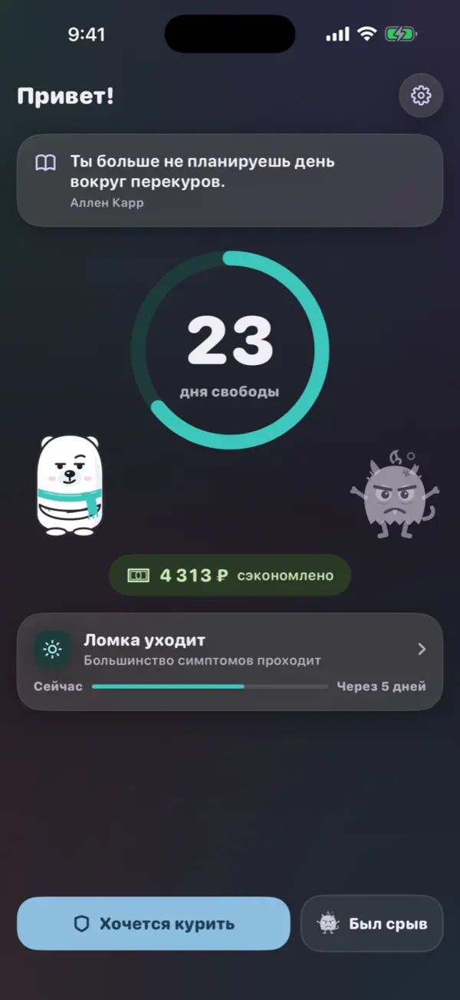
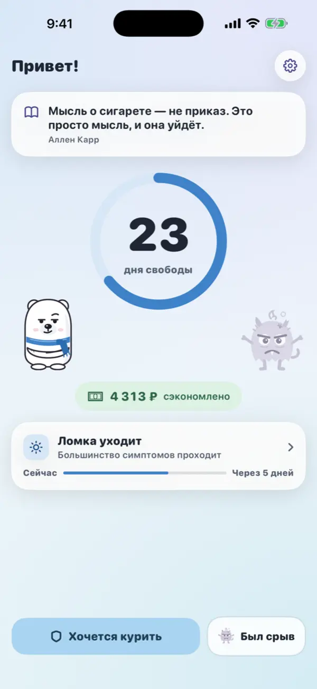
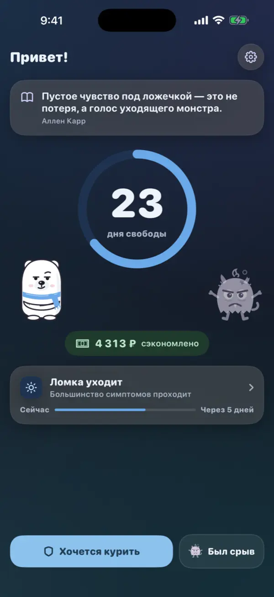
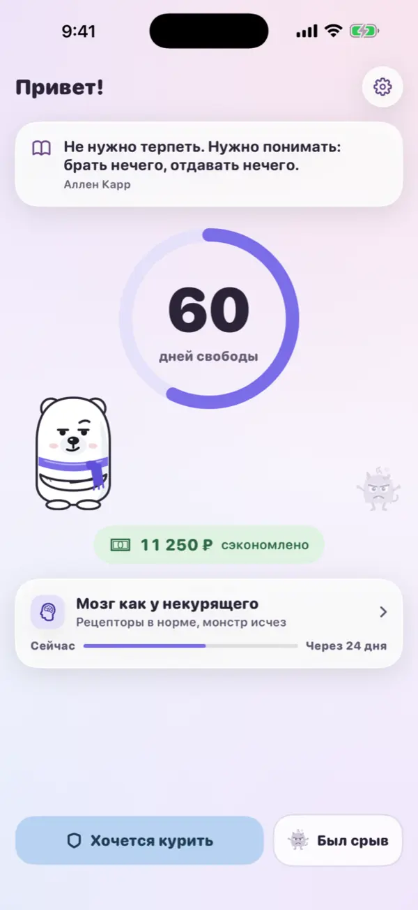
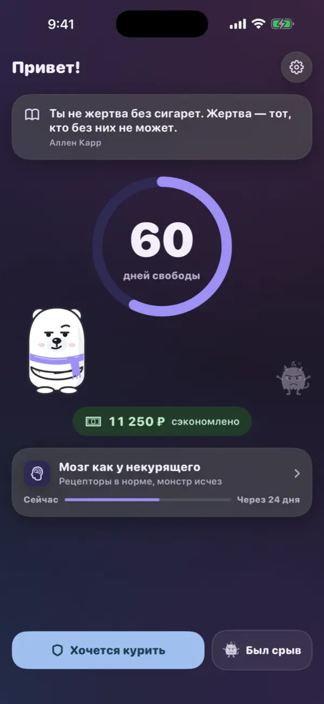
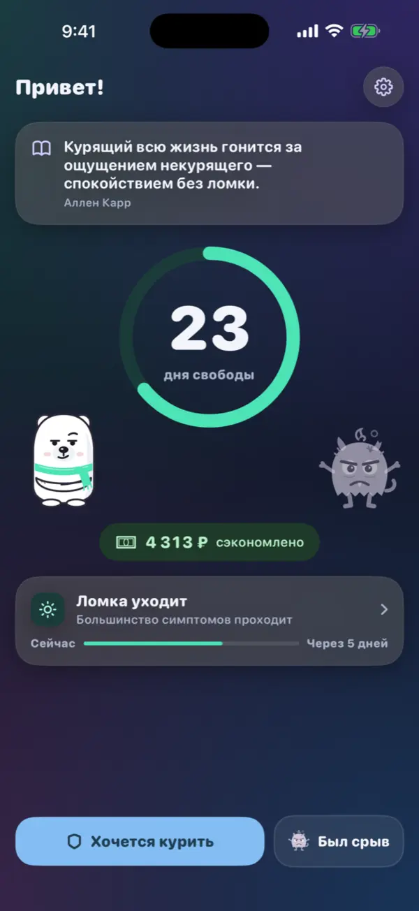
Куда движется Норд. Порядок меняется по вашим голосам — подробный роадмап.
Счётчик дней и денег, Норд и монстр, «Хочется курить», срыв без стыда, путь организма, виджеты, обратная связь. Идёт тестирование в TestFlight.
Норд доступен всем на iPhone.
Версия для Android-телефонов.
Вход через Apple или Google, прогресс сохраняется при смене телефона.
Рейтинг по дням свободы, поддержка друга после срыва готовыми фразами или своим текстом.
Новые маскоты, челленджи с друзьями и копилка на цель.
Норд делается вместе с теми, кто бросает. Расскажите, что улучшить: в приложении — Настройки → «Написать нам», без аккаунта. Или здесь: